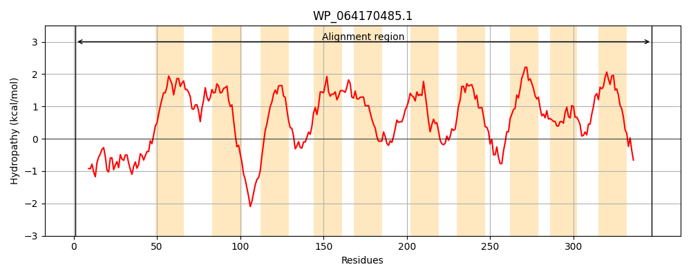
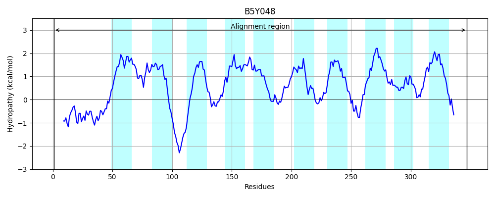
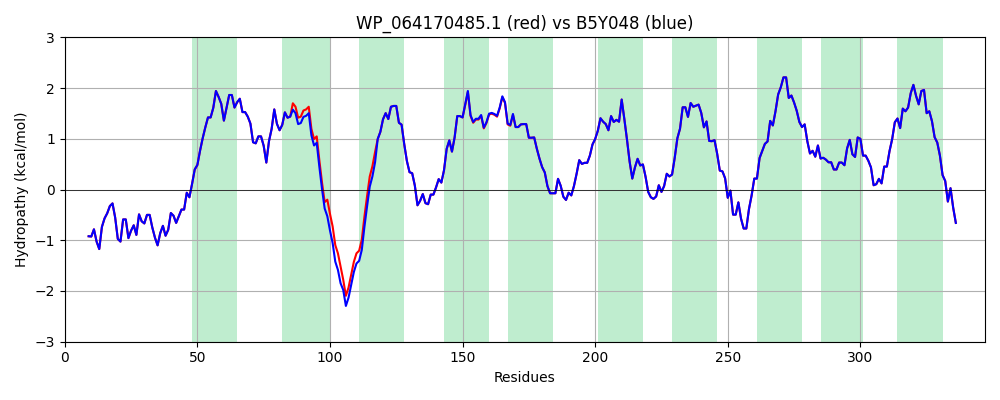

Hit Accession: B5Y048
Hit TCID: 9.B.8.3.4
Hit Description: gnl|BL_ORD_ID|1936 gnl|TC-DB|B5Y048|9.B.8.3.4 Putative membrane protein OS=Klebsiella pneumoniae (strain 342) GN=KPK_4035 PE=4 SV=1
Mach Len: 347
e:0.000000
Query TMS Count : 10
Hit TMS Count: 10
TMS-Overlap Score: 9.000000
Predicted Substrates:None
BLAST Alignment:
Score: 1814 , Bit scores: 703 bits, E-value: 0.0e+00, Alignment length: 347, Percentage identity: 99
Query: 1 MNVTRKEQRIIQRALNAWQASGELTPSDSQRLAHTLRVSPFDWRRLSRYAFWTALACVLIALGSLFADSELVAWLLSLFSHSALTRILLPALLAVVCYGWGFRRQRRETQWHYSTEAILFLGVVFTAVSLWQLGERLDNGSGHIAPLFLAGCVIYGAIGYVARSGLVWLFFLLALGNWFGAETGYVSGWGAYWLGMNYPIRFVLFGGALLALCYGAQSLLRQRQLFTVSKAMGLTYLFIALWILSIFGNYDADSWYQVSQARLLPWGLLFAVAAGVCIFISLKTDDGMLRGFGLTFLAINLYTRFFEFFWNGMHKVLFFLILAVSLAVIGRYAERIWHAGEGQVEKK 347
MNVTRKEQRIIQRALNAWQASGELTPS+SQRLAHTLRVSPFDWRRLSRYAFWTALACVLIALGSLFADSELVAWLLSLFSHSALTRILLPALLAV CYGWGFRRQRRE QWHYSTEAILFLGVVFTAVSLWQLGERLDNGSGHIAPLFLAGCVIYGAIGY+ARSGLVWLFFLLALGNWFGAETGYVSGWGAYWLGMNYPIRFVLFGGALLALCYGAQSLLRQRQLFTVSKAMGLTYLFIALWILSIFGNYDADSWYQVSQARLLPWGLLFAVAAGVCIFISLKTDDGMLRGFGLTFLAINLYTRFFEFFWNGMHKVLFFLILAVSLAVIGRYAERIWHAGEGQVEKK
Sbjct: 1 MNVTRKEQRIIQRALNAWQASGELTPSESQRLAHTLRVSPFDWRRLSRYAFWTALACVLIALGSLFADSELVAWLLSLFSHSALTRILLPALLAVACYGWGFRRQRRERQWHYSTEAILFLGVVFTAVSLWQLGERLDNGSGHIAPLFLAGCVIYGAIGYIARSGLVWLFFLLALGNWFGAETGYVSGWGAYWLGMNYPIRFVLFGGALLALCYGAQSLLRQRQLFTVSKAMGLTYLFIALWILSIFGNYDADSWYQVSQARLLPWGLLFAVAAGVCIFISLKTDDGMLRGFGLTFLAINLYTRFFEFFWNGMHKVLFFLILAVSLAVIGRYAERIWHAGEGQVEKK 347 | Protein Hydropathy Plots: |
|---|
|  |  |
Pairwise Alignment-Hydropathy Plot:
|
|---|
|  |